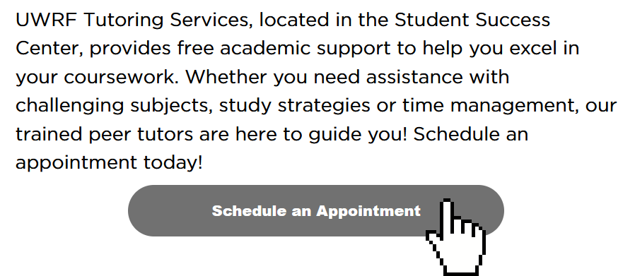
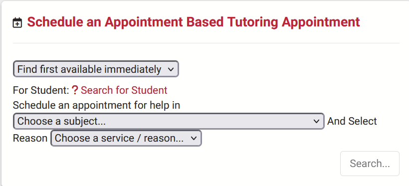
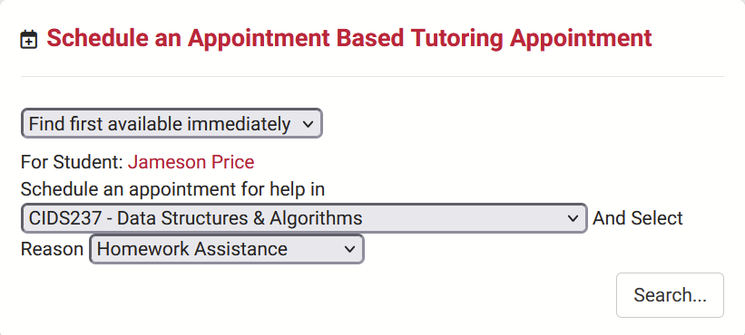
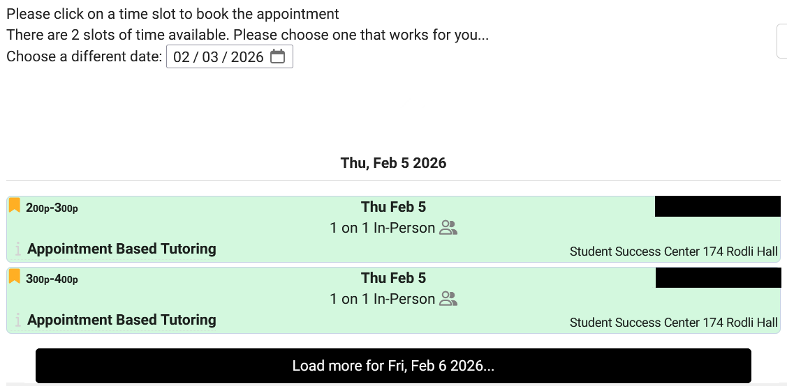
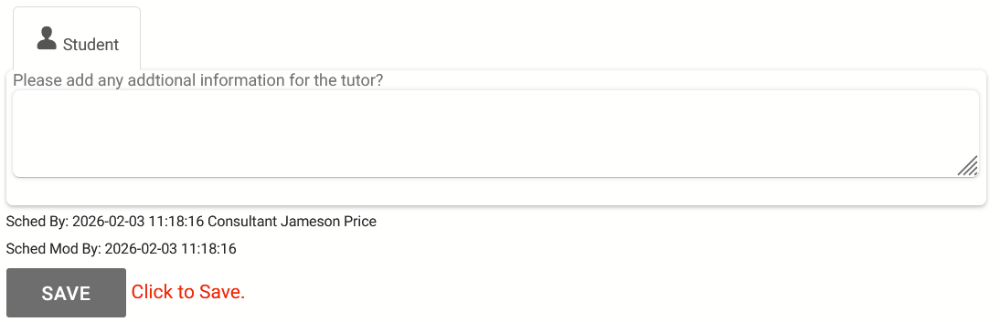

Accessing UWRF Tutoring Services
-
Visit https://students.uwrf.edu/studentsuccess/tutoring-services
-
Click the “Schedule an Appointment” button

-
Locate the widget to make an appointment
-
Find yourself in the “For Student” dropdown, pick the appropriate class, and pick a reason


-
Click the search button, and click on any available appointments
If you’d like a different time, click the “Load more for…” button
-
If there are no available appointments, please click the “Report Unable to Find Appointment” button

-
Scroll down, and click the “Save” button to finalize your appointment
-
Please leave additional notes for the tutor if you can, like what you are currently working on, and anything else that may be out of the ordinary
